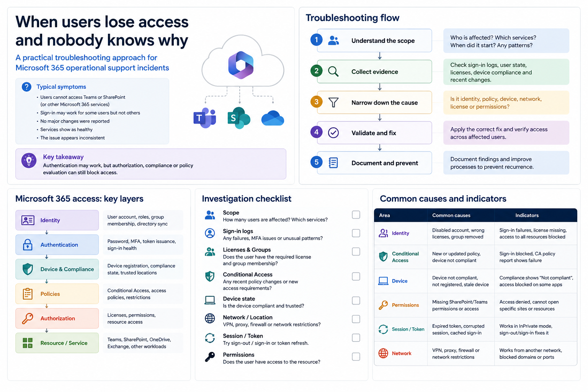

Start with the symptom, not the assumption
When a user cannot access email, SharePoint, OneDrive or a business application, the first mistake is to jump directly into changing permissions. The better approach is to define the exact symptom: what fails, where it fails, who is affected, when it started and whether the failure is consistent.
Useful first question: is this a single-user issue, a group issue, a location/device issue, or a service-wide issue?
Check the identity basics
- Confirm the user account is active and not blocked.
- Check whether password reset, MFA registration or conditional access is involved.
- Validate the user is signing in with the expected account and tenant.
- Look for recent changes to the user, group membership or role assignment.
Separate license from permission
A user may authenticate correctly but still be unable to use a service if the right license is missing. Equally, the license may be correct but the resource permission may be wrong. Treat those as two separate checks.
Review groups and inheritance
Many access issues come from nested groups, old security groups, broken ownership or assumptions about inheritance. For shared resources, verify the actual effective permission, not only the intended permission.
Document the fix
The final step is to record what changed and why. That is what turns a one-off fix into operational knowledge and reduces repeat incidents.